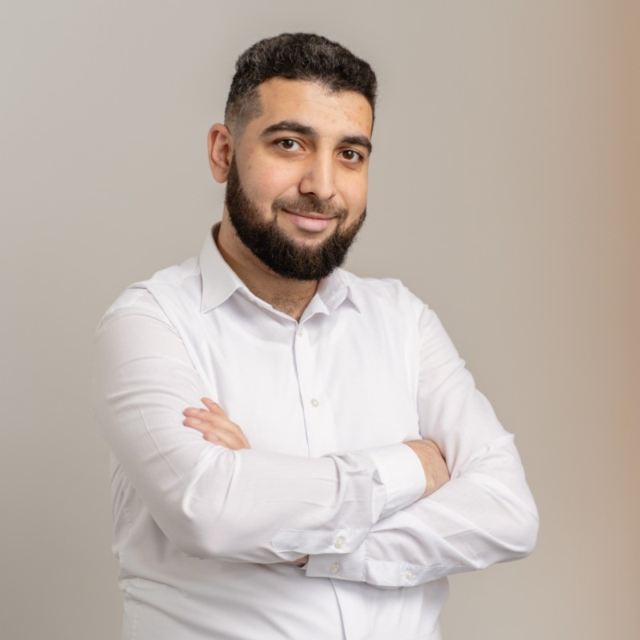

Reduced report generation time by redesigning query and data-access patterns.
Senior Backend Engineer · Team Lead
I build backend systems that stay fast as complexity grows.
I turn data-heavy product requirements and legacy constraints into reliable PHP/Laravel platforms—then help small engineering teams ship them with confidence.
- Available immediately
- Yerevan, Armenia · Remote

8+years in
software engineering
software engineering
Profile
Backend depth.
Product perspective.
I am a backend-focused software engineer with hands-on experience across architecture, implementation, technical leadership, and production support. My strongest work sits where business-critical data, performance, and maintainability meet.
I have led teams of 3–4 engineers, decomposed monoliths, modernized legacy systems, and designed reporting pipelines for high-volume environments. I stay close to the code while creating enough clarity for a team to move faster.
Impact
Selected professional impact
Led focused delivery teams through planning, reviews, mentoring, and releases.
Separated domains and introduced services without destabilizing active products.
Expertise
Honest about depth.
Curious beyond it.
I distinguish production experience from technologies I have used in a limited scope or studied conceptually.
Professional
Production strengths
- PHP, Laravel, Symfony
- MySQL, ClickHouse, Redis
- REST APIs and backend architecture
- CDC architecture and data pipelines
- High-volume analytics and reporting
- Legacy modernization and monolith decomposition
- Technical leadership and mentoring
Limited
Used in scoped work
- JavaScript and Vue.js
- Docker and CI/CD workflows
- Elasticsearch
- AI-assisted Python implementation
Conceptual
Architecture-level familiarity
- Python, Node.js, TypeScript
- Go
- Kafka and event-streaming concepts
- Cloud-native system design
Experience
Selected roles
A progression from hands-on full-stack delivery to backend specialization and team leadership.
Senior Backend Engineer
Built and optimized data-intensive reporting capabilities in a high-load environment. Improved slow reporting flows from minutes to seconds, designed a custom MySQL-binlog-to-ClickHouse CDC service, and directed its AI-assisted Python implementation.
Team Lead
Led a small engineering team across estimation, architecture, code review, mentoring, delivery, and stakeholder communication while remaining hands-on in backend development.
Software Engineer
Owned bot functionality and helped shape backend logic and integrations in a Node.js and TypeScript product, working at solution level alongside the product team.
Senior Backend Engineer
Developed and maintained API services using Clean Architecture and SOLID principles. Contributed to core API design, established CI/CD pipelines, and refactored legacy code to improve maintainability.
Backend Engineer
Designed and built web applications and APIs across client projects, provided architectural guidance, and resolved performance bottlenecks in high-traffic scenarios.
Full Stack Web Engineer → Team Lead
Built APIs and web applications for a fintech platform, implemented a WebSocket live-chat system, integrated payment gateways, and later coordinated a team of 3–4 engineers while addressing critical security issues.
Full Stack Developer
Delivered custom websites and CMS-based client solutions, including bespoke plugins, themes, and extensions tailored to business requirements.
Selected engineering work
Code built to be reused.
Focused open-source packages from real integration and product needs.
Open source · Laravel
Livewire Datatables
A configurable server-side datatable package for Laravel Livewire, built for expressive querying and practical product use.
View repository PaymentsOmnipay Telcell
A reusable Omnipay gateway integration for Telcell payment flows.
View repository PaymentsOmnipay Ameriabank
A PHP payment gateway package designed for a clean Ameriabank integration.
View repository Developer toolingYoutuber for Laravel
A Laravel package for working with YouTube-oriented application flows.
View repositoryMore experiments and packages on GitHub.
Background
Education & languages
Education
National Polytechnic University of Armenia
Master’s degree, Radio Engineering and Communications · 2014—2020
Languages
Armenian · Russian · English
Native Armenian, fluent Russian, professional working English.
Contact